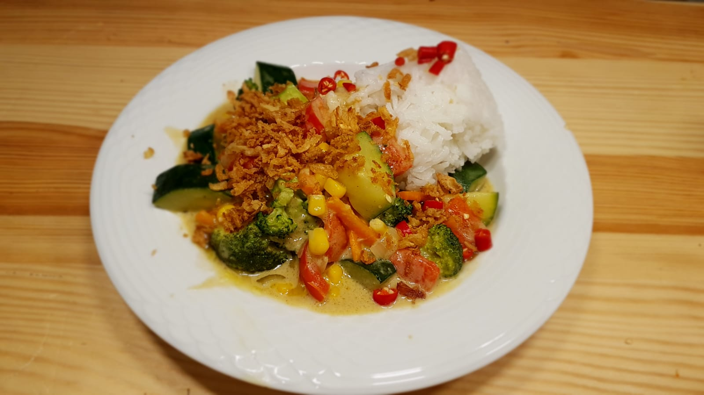
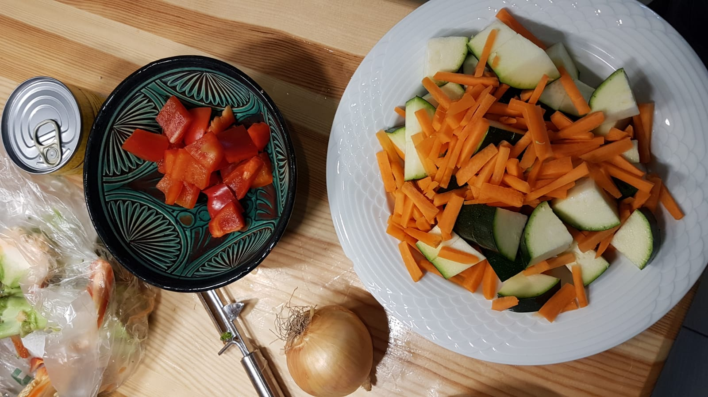
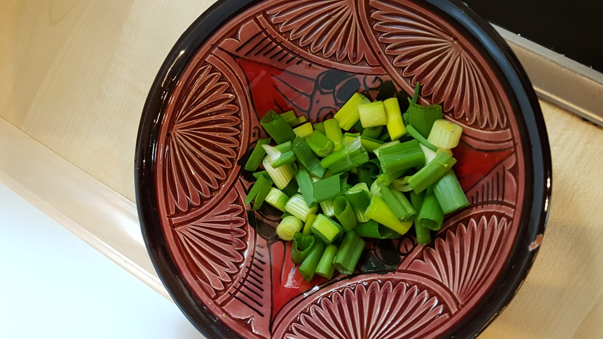
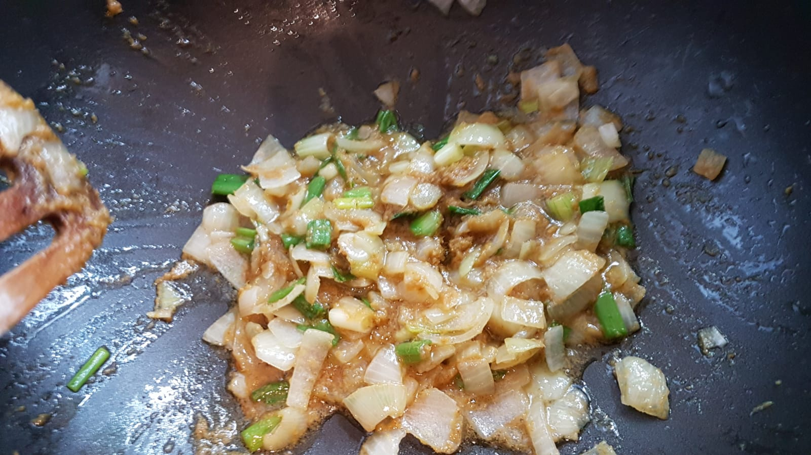
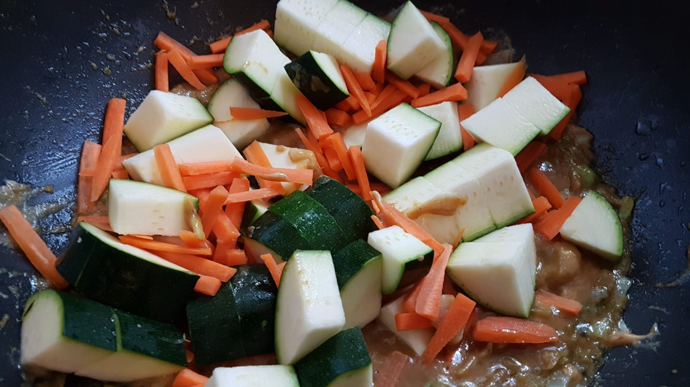
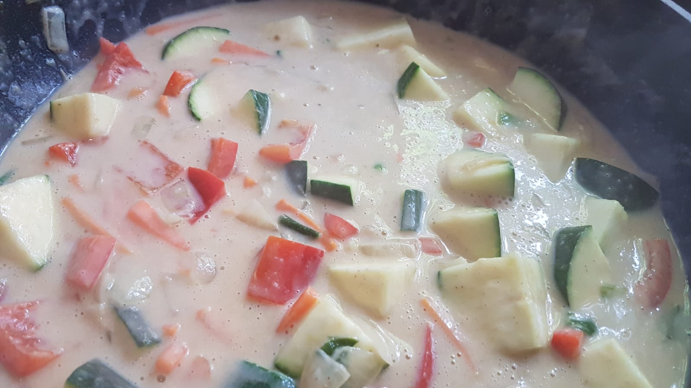

Curry is a dish found in many Asian countries. It's always spicy, but not necessarily in the hot-spicy sense. There are just a lot of spices in curry 🙂.
{kind=link}

Ingredients
For 3 people, you need:
- 500g Broccoli
- 1 Zucchini
- 1 big onion
- 1 pepper
- 2 carrots
- 3 spring onions
- 0.5 teaspoons salt
- 0.5 teaspoons pepper
- 0.5 teaspoon of powder for vegetable broth (German: Gemüsebrühe)
- 2 teaspoons sugar
- 2 tablespoons Curry
- 1 teaspoon Fish sauce
- 1 small tin can of Corn
- 3 red hot Chili peppers
- 1 can of coconut milk
- French fried onions
- Sunflower oil
- Side dish: Rice; roughly 0.1L per person. I like jasmine rice most.
Tools
- A big Wok in which all of the above fit
- A sharp knife and a cutting board for cutting the vegetables
- A rice cooker - if you don't have that, a pot is also fine
- A Ladle to get the Curry out of the wok
- One spoon and a soup plate per person
Preparation
For all of the following, you will need roughly 1h.
Rice: Put it in a rice cooker with double the amount of water.
Preparation:
- Peel the carrots and cut them into sticks.
- Wash the Broccoli and cut it into pieces that you can eat comfortably.
- Cut the onion.
- Wash the spring onions and cut them into pieces.
- Wash the zucchini. Cut it into roughly 1cm thick slices. Make roughly 4 - 9 pieces out of the Zucchini, so that you can eat it comfortably.
{kind=link}

{kind=link}

Curry:
- Put the oil in the wok. Make it hot.
- Once the oil is hot, add the onions.
- Quickly after that, add the curry. Cook it until it smells good.
- Add the coconut milk.
- Add the Broccoli and carrots.
{kind=link}

{kind=link}

{kind=link}

Serve (for each person):
- Put the rice in a small cup to form it. Put it on the plate.
- Put the Curry on the plate
- Put some french fried onions over the rice